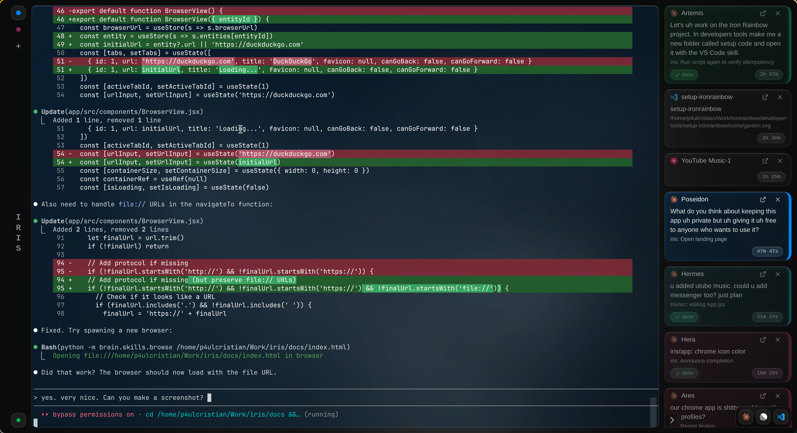
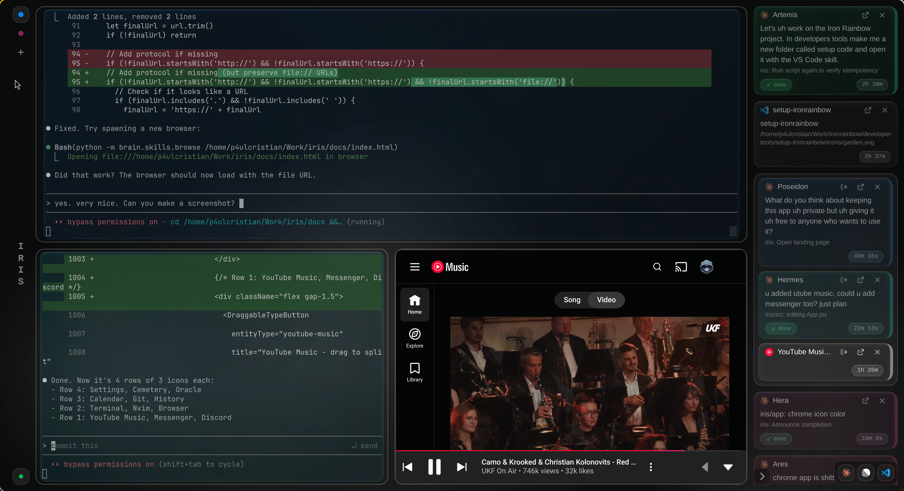

Run multiple Claude Code instances in parallel with persistence and tiling.
Also available: .deb · All releases

Run multiple Claude Code instances side-by-side. Each god works independently in its own terminal, with colored borders and status indicators. The right panel shows task cards tracking what each instance is working on.

Each workspace contains stages that can hold different entity types. Split your view between Claude instances, embedded browsers, YouTube Music, or code viewers. Switch between stages instantly while sessions persist in the background.
Iris draws from Greek mythology. Each Claude instance is a god, workspaces are realms, and the UI elements follow the divine theme.
Each Claude Code instance is a god from the Greek pantheon — Zeus, Artemis, Poseidon, and more. Gods work independently in their own terminals, each with a unique color. Summon a god with Ctrl+N, banish one with Ctrl+K.
Realms are workspace tabs — Olympus, Tartarus, Elysium, and more. Each realm has its own layout and set of entities. Switch between realms to organize different projects or contexts. The left sidebar shows all available realms.
The stage is the main content area. It contains a surface that can be split into tiles. Each tile holds one entity — a god, browser, terminal, or code viewer. Split horizontally or vertically to create your ideal layout.
The bottom-right summon menu lets you spawn new entities. Click the [+] or press Ctrl+N to summon a god. You can also spawn terminals, browsers, YouTube Music, or code viewers in any tile.
The right sidebar shows scrolls — status cards for each god. Scrolls display the god's name, current task, status (working, done, stuck), and elapsed time. Click a scroll to focus that god's tile.
Run multiple Claude Code instances side-by-side in a tiled workspace.
Sessions survive app restarts via dtach. Pick up where you left off.
Organize work across multiple tabs. Each workspace has its own layout.
Spawn, focus, and manage instances without leaving the keyboard.
brew install dtach (Mac) or apt install dtach (Linux)
Download the latest release for your platform
https://github.com/p4ulcristian/iris-releases/releases
Install dtach if you haven't already
brew install dtach # macOS
Run Iris and press Ctrl+N to spawn your first instance